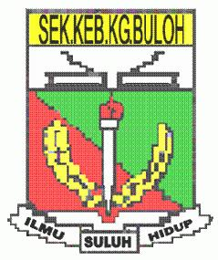
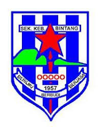

My educational journey has been a significant part of shaping who I am today. Through dedication, perseverance, and a passion for learning, I have embraced every opportunity to grow academically and personally, building a foundation for my future. And here are my Education Journey !
| Logo | School Name | Achievement |
|---|---|---|
 |
SK Kampung Buluh, Setiu, Terengganu |
|
 |
SK Bintang, Setiu, Terengganu |
|
| SMK(A) Nurul Ittifaq, Besut, Terengganu |
|
|
| Universiti Teknologi Mara, Campus Machang, Kelantan |
|